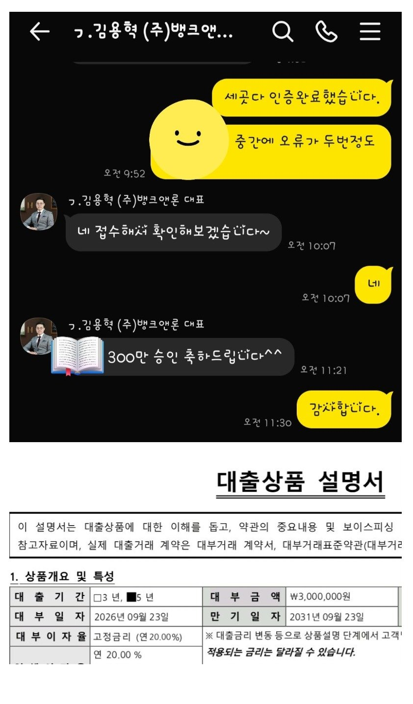

[개인회생자대출] 도움 주셔서 감사드립니다.
안녕하세요
두달전쯤 급하게 자금이 필요해서 카페에 문의글을 올렸습니다.
당시 김용혁 대표님께서 제 상황을 확인해 보시고 타 금융권 부결 이력이 여러건 있어서 부결된 곳들은 61일 동안 재심사를 해주지 않는다고 하셨고
62일째 되는 날 연락을 달라고 하셨어요.
그때 62일째 되면 최선을 다해서 도움을 주시겠다는 답변을 받았습니다.
그래서 기다렸다가 60일째 되는 날 혹시 회사에서
미리 발급 받아야 할 서류가 있는지 문의 드렸습니다.
저는 4대보험 가입자라 회사에서 따로 준비할 서류는 없었고 이현섭 과장님께 다른 필요한 서류를 안내 받아서 준비한뒤 어제 팩스로 보내 드렸습니다.
그리고 오늘이 62일째 되는 날이라 세 곳으로 진행했고 다행히 그중 한 곳에서 승인이 나서 필요한 금액을 받을 수 있었습니다.
저처럼 부결 이력이 많아서 바로 진행하기 어려운
상황이라면 무작정 여러 곳에 조회부터 넣기 보다는
현재 상황을 먼저 상담 받아보는 것도 괜찮을 것 같습니다.
덕분에 필요한 자금도 마련했고 걱정했던 것보다
깔끔하게 마무리되어 정말 다행입니다.
도움 주신 김용혁 대표님과 이현섭 과장님께
감사드립니다.

https://cafe.naver.com/cityman88/312245